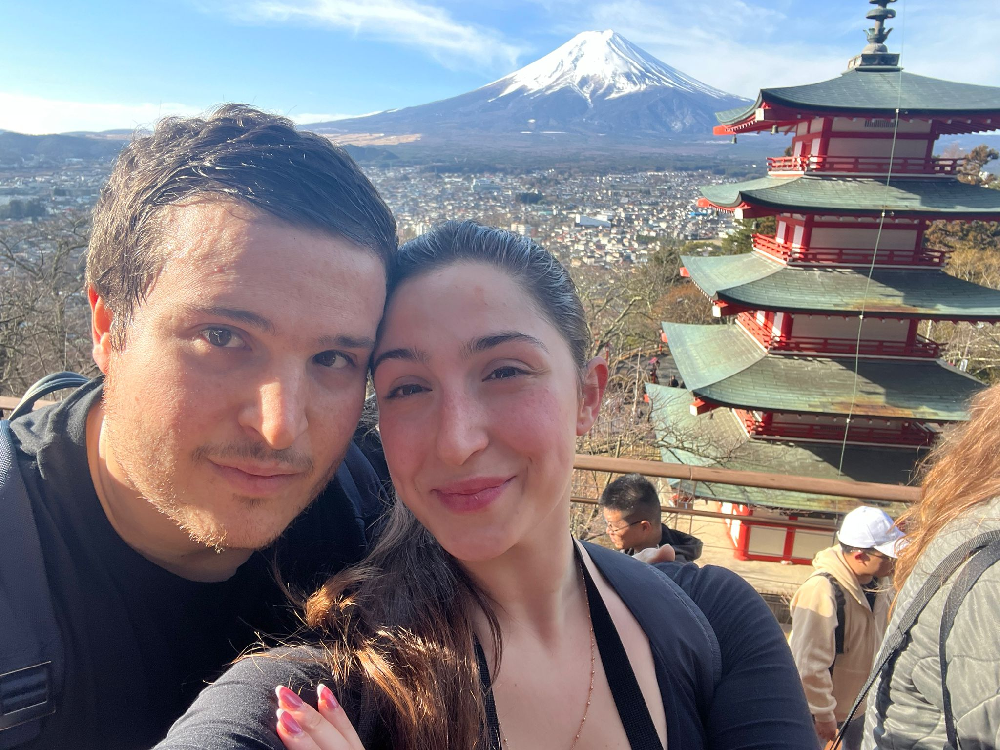

Chi siamo
Yume Travel Tech nasce dall'idea di rendere il Giappone accessibile, autentico e inclusivo. Il nostro obiettivo è abbattere barriere culturali, sensoriali e linguistiche, offrendo esperienze di viaggio personalizzate grazie alla tecnologia e all'empatia.
Con YUTA, il nostro assistente AI, trasformiamo la complessità di un viaggio in Giappone in un percorso guidato, fluido e personalizzato, adattato alle esigenze di ogni viaggiatore.
